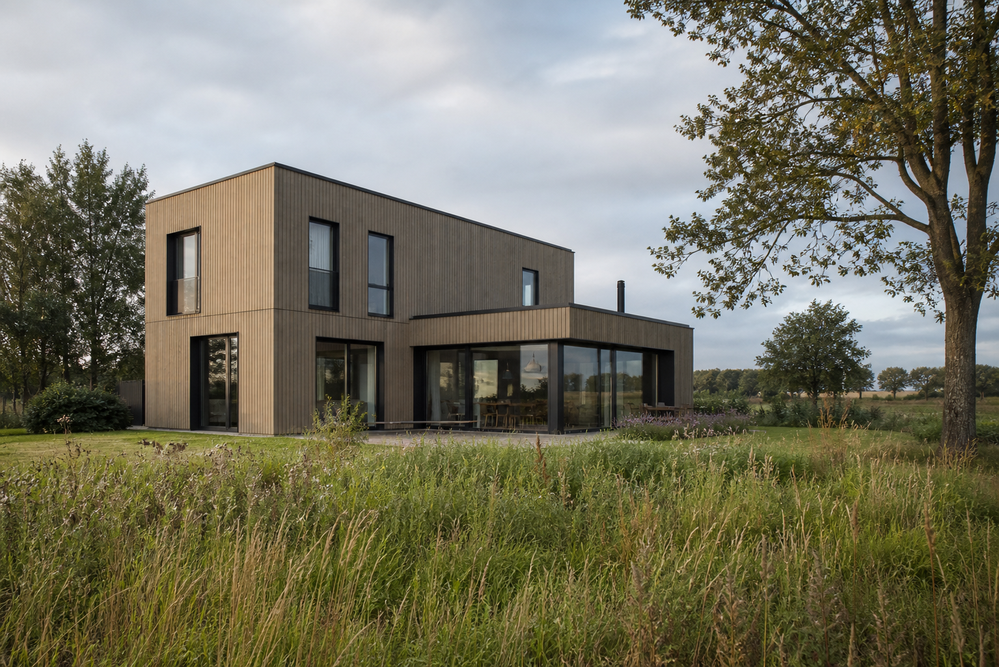

01 Projectintro
TB / 2026
01
De
Houtkavel
Een eigentijdse woning in balans met context, licht en materiaal.
Technische helderheid vormt de basis voor een duurzame toekomst.

005
Ontwerpboek / design direction
Checkpoint 01
01 Projectintro
TB / 2026
01
Een eigentijdse woning in balans met context, licht en materiaal.
Technische helderheid vormt de basis voor een duurzame toekomst.

005